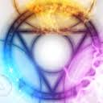
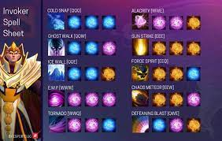
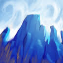
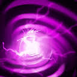
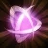
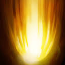
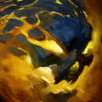
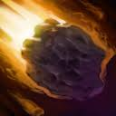

Invoker

Invoker lore:
In its earliest, and some would say most potent form, magic was primarily the art of memory. It required no technology, no wands or appurtenances other than the mind of the magician. All the trappings of ritual were merely mnemonic devices, meant to allow the practitioner to recall in rich detail the specific mental formulae that unlocked a spell's power.
The greatest mages in those days were the ones blessed with the greatest memories, and yet so complex were the invocations that all wizards were forced to specialize. The most devoted might hope in a lifetime to have adequate recollection of three spells—four at most. Ordinary wizards were content to know two, and it was not uncommon for a village mage to know only one—with even that requiring him to consult grimoires as an aid against forgetfulness on the rare occasions when he might be called to use it.
But among these early practitioners there was one exception, a genius of vast intellect and prodigious memory who came to be known as the Invoker. In his youth, the precocious wizard mastered not four, not five, not even seven incantations: He could command no fewer than ten spells, and cast them instantly. Many more he learned but found useless, and would practice once then purge from his mind forever, to make room for more practical invocations. One such spell was the Sempiternal Cantrap—a longevity spell of such power that those who cast it in the world's first days are among us still (unless they have been crushed to atoms).
Most of these quasi-immortals live quietly, afraid to admit their secret: But Invoker is not one to keep his gifts hidden. He is ancient, learned beyond all others, and his mind somehow still has space to contain an immense sense of his own worth...as well as the Invocations with which he amuses himself through the long slow twilight of the world's dying days.
Invoker have three spheres and when he combine this spheres he got spells, about spheres and Invoker spells:
Spheres:
Quas
allows for manipulation of ice elements. Besides the elements, it also grants him bonus regeneration, but it's not clear if it restores either health or mana only or both, since he has likened his Quas to a Regeneration Rune. Quas may act as a catalyst that boosts the properties of his spells that rely on Quas to be invoked. However, it hasn't been acknowledged in the lore yet
Wex

allows for manipulation of storm elements. It also grants additional speed in both movement and combat. It's possible that Wex acts as a catalyst that increases the speed or movement properties of spells that require Wex. As of now, this is just gameplay mechanics, but given how some gameplay elements are acknowledged or translated into the lore, it might be a good possibility.
Exort
allows for manipulation of fire elements. It also increases the damage of the user, but the bonus is implied to cost something, at least according to his younger self. It may be said that Exort's damage boosting properties are catalysts that affect the power of spells that rely on Exort when invoked, but so far, this has not been acknowledged in Dota 2's lore yet.
Invoke
Carl is one of the few quasi-immortals who have mastered a potent and ancient form of magic lost to the ages. Although his magic doesn't seem to have an official name, the spells that he casts are known as Invocations. This should mean that Invoke is his brand of magic, according to his younger self.
Spells:
Cold snap
Cold Snap is invoked when using three instances of Quas. The spell is also known as "Sadron's Protracted Frisson". If Vancian magic rules were used, then "Sadron" should be the creator of this spell. No mere freezing magic, this cantrip does not directly freeze the opponent in ice like most spells, but rather saps the heat from their body and freezes them as a consequence instead.
Ghost walk
Ghost Walk is invoked when using two instances of Quas and one instance of Wex. It is also known as "Myrault's Hinder-Gast" or "Geist of Lethargy". A rule of Vancian magic would dictate that "Myrault" would be the creator of this spell. Based on its lore, the names of this spell, and its effects in gameplay, the cantrap renders Carl invisible by controlling the ice and electrical energies to create an elemental imbalance that slows both him and anyone within his proximity.
Ice Wall
Ice Wall is invoked when using two instances of Quas and one instance of Exort. It is also known as "Killing Wall of Koryx" or "Bitter Rampart". If the rules of Vancian sorcery are to be applied, then "Koryx" would be the spell's creator. This spell simply creates a wall of ice that emanates a bitter aura of debilitating cold. When casting this spell, Carl may call upon the White Waste, which is likely another name for the Frozen Wastes.His younger self states that he invokes ice (Quas) and storm (Wex) when he uses this magic, which contradicts the elemental combo meant for this spell.
E.M.P.
EMP is invoked when using three instances of Wex. EMP stands for Extractive Mana Pulse, but it still retains its original meaning: electromagnetic pulse. It is also known as either "Endoleon's Malevolent Perturbation" or "Shimare's Extractive Pulse". With the rules of Vancian magic, the creator would either have to be "Endoleon" or "Shimare". The spell will cause a charge of electromagnetic energy that depletes the mana of those caught in the blast.
Tornado
Tornado is invoked when using two instances of Wex and one instance of Quas. Also known as "Claws of Tornarus". A rule of Vancian magic would imply that "Tornarus" is the true creator of the spell. When cast, it unleashes a fast moving tornado that forcefully throws victims into the air to whirl and suspend helplessly for a few moments. The tornado's wind will then dissipate, allowing the affected to fall to their demise.
Alacrity
Alacrity is invoked when using two instances of Wex and one instance of Exort. Alacrity is also known as "Zeal of Wexort" or "Gaster's Mandate of Impetuous Strife". This battle spell was made in the Age of Gaster to solve the predicament of mages being unable to properly face well-armed opponents in close quarters. Once it's cast, it infuses the target with an immense surge of energy that boosts their combat speed and increases their damage.
Sun Strike
Sun Strike is invoked when using three instances of Exort. It's also known as "Harlek's Incantation of Incineration". However, according to the Magus Apex, the spell comes from the Sol Apex Incantation. When cast, it focuses a powerful ray of solar energy from the sun to a targeted location, incinerating anything caught in its wake. Lorewise, Carl does not really see where this spell hits when he casts it too far from him, so he must rely on prediction to hit enemies that are out of his line of sight.
Forge Spirit
Forge Spirit is invoked when using two instances of Exort and one instance of Quas. It is also known as "Culween's Most Cunning Fabrications". Rules of Vancian sorceries imply that "Culween" is the spell's creator. When cast, it summons a fiery elemental/s that embodies the strength of fire from Exort and the fortitude of ice from Quas. This flame elemental has a Melting Strike that can melt through enemy armor. His younger self summons a dragon hatchling with the same powers.
Chaos Meteor
Chaos Meteor is invoked when using two instances of Exort and one instance of Wex. Chaos Meteor's other names are "Voidal Pyroclasm", "Tarak's Descent of Fire", and "Gallaron's Abyssal Carnesphere". Vancian magic rules dictate that either "Tarak" or "Gallaron" would be the maker of this spell. When cast, Carl will pull a meteor from space and send it unto the target location, causing the meteor to burn up into a flaming projectile. It will devastate the target area upon landing, before rolling forward to crush and incinerate anything in its wake until it crumbles. This spell, alongside his tall ornate pauldrons, are proof that Invoker's power can even reach the realm of outer space.
Deafening Blast
Deafening Blast is invoked when using one instance of Quas, Wex, and Exort. It is also known as "Buluphont's Aureal Incapacitator". A rule of Vancian magic would imply that that "Buluphont" made the spell. When cast, it unleashes a powerful sonic wave that knocks back opponents.